Interior designed for Amazon KDP print (6 × 9 in) and Kindle.
Photographs: Photo by Matheus Bertelli on Pexels; Photo by yun zhu on Pexels; Photo by Edoardo Colombo on Pexels; Photo by Ahmet ÇÖTÜR on Pexels; Photo by Max Vakhtbovych on Pexels; Photo by Alfredo Marco Pradil on Pexels; Photo by Dmitry Zvolskiy on Pexels; Photo by https://kaboompics.com/ on Pexels; Photo by cottonbro studio on Pexels; Photo by Karina Badura on Pexels; Photo by myHQ-Workspaces on Pexels; Photo by AJ Ahamad on Pexels; Photo by Jan van der Wolf on Pexels; Photo by Denys Gromov on Pexels; Photo by Berna on Pexels; Photo by Aditya Oberai on Pexels; Photo by Jayanth Muppaneni on Pexels; Photo by Thirdman on Pexels; Photo by Ivan S on Pexels; Photo by Enric Cruz López on Pexels; Photo by N Sopyan on Pexels; Photo by Leo Sacchi on Pexels; Photo by Beyzaa Yurtkuran on Pexels; Photo by Anisha Deb on Pexels; Photo by Manolya İzgi Gezgin on Pexels; Photo by Pavel Danilyuk on Pexels; Photo by Ty Nguyễn on Pexels; Photo by Sami Abdullah on Pexels; Photo by Engin Akyurt on Pexels; Photo by Heather Green on Pexels; Photo by HRIDYAKSH GEJWAL on Pexels; Photo by Uday Ahir on Pexels; Photo by Namfon Sasimaporn on Pexels; Photo by Ayşegül Aytören on Pexels; Photo by DS stories on Pexels; Photo by Ann H on Pexels; Photo by David Brown on Pexels; Photo by Turgay Koca on Pexels; Photo by Dương Nhân on Pexels.
Designing a terrace that is both safe and stylish requires careful planning and consideration of your family's needs. This chapter provides a comprehensive guide to creating a functional and beautiful outdoor space that accommodates play, relaxation, and dining while ensuring safety.
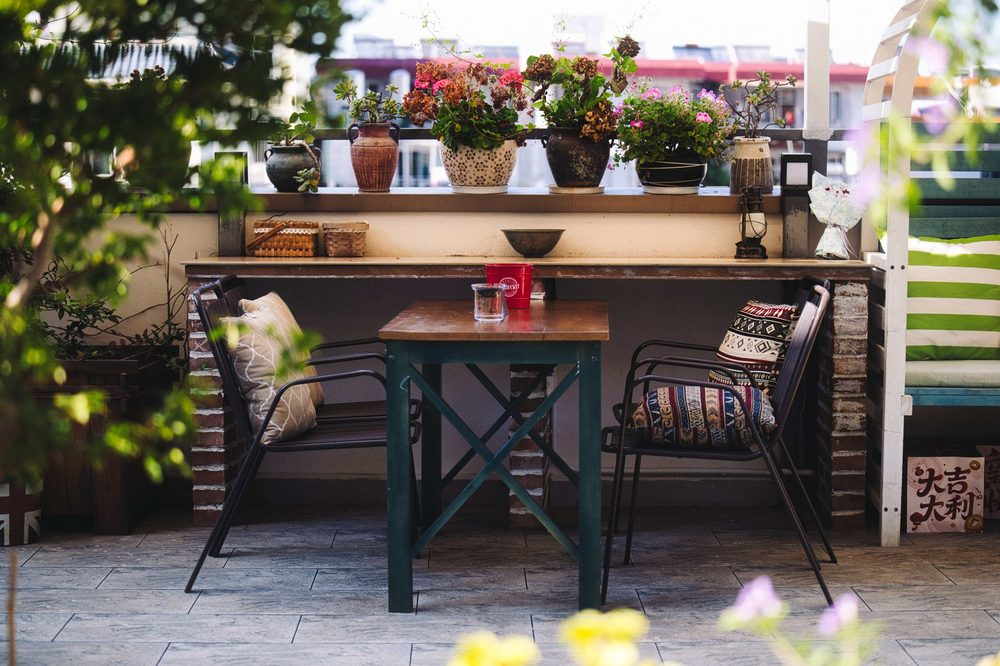
Day 1
Setting The Stage
In this apartment
Small terrace: Riya in a Pune 1BHK has about ten feet of terrace. She wants play and breakfast without treating the slab as a living room.
A well-designed terrace integrates safety and style seamlessly.
Today's output: a one-page vision that names play, dining, and quiet time — and lists what you will not DIY.
Guards come before furniture. A terrace is an exposed building surface: rain, wind, and load travel through it into the rooms below. Style is the last layer.
Use six example households in this book, not a new family on every page: a small terrace, a medium terrace, a large terrace, a monsoon terrace, a rental, and a multigenerational family.
Do this
Write the vision
List non-DIY work
Name your terrace size: small, medium, or large
Before you move on
Write the vision
List non-DIY work
Name your terrace size: small, medium, or large
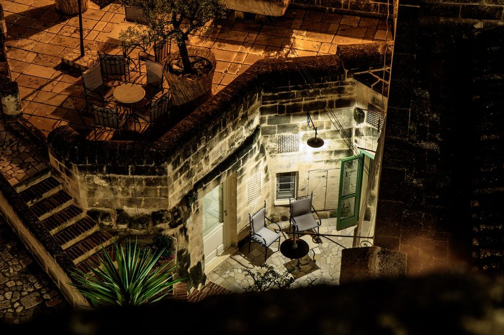
Day 2
Detailed Breakdown And Evidence
In this apartment
Rental: Arjun in a compact Bengaluru rental where drilling needs approval. His terrace is about eight feet wide.
Understanding the structure and safety requirements is crucial for a successful terrace design.
Today's output: measured width, drop height, door swing, and every drain you can see, photographed.
Evidence beats a pretty mood board. Note standing water stains, door-threshold gaps, and whether furniture already blocks a drain.
If you rent, stop at documentation. Anchoring, flooring changes, and waterproofing wait for written approval.
Do this
Measure width and drop
Photograph every drain
Circle what needs landlord or society approval
Before you move on
Measure width and drop
Photograph every drain
Circle what needs landlord or society approval
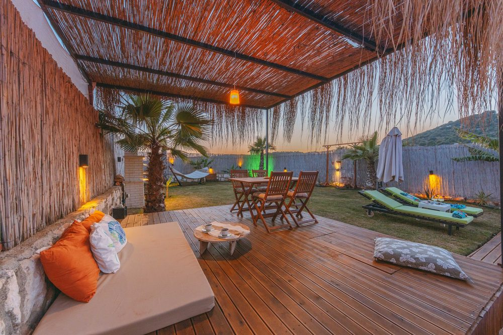
Day 3
Translating Routines Into Zones
In this apartment
Medium terrace, monsoon: Meera in a Mumbai flat, about twelve by five feet, evening meals and a few planters.
Mapping routines into functional zones helps create an organized and clutter-free terrace.
Today's output: play, lounge, and dining blocks that leave a clear path from the door to the guard — and do not cover drains.
Routines decide zones. Wet-climate terraces need a dry landing inside the door and furniture that can move before rain.
Do not invent a fourth family. If your terrace is this size, you are Meera's layout, not a new case study.
Do this
List family routines and their requirements.
Draw zone boundaries on the terrace plan.
Design clear pathways for movement.
Before you move on
List family routines and their requirements.
Draw zone boundaries on the terrace plan.
Design clear pathways for movement.
Chapter
Guarded Edge Systems Blueprint: Railings, Screens, And Barriers
Guarded Edge Systems Blueprint: Railings, Screens, And Barriers Chapter Introduction Step onto a terrace and your eyes travel to the edge. That boundary defines how free you feel, how safe your children are, and how calm the space appears. In the previous chapter, you mapped your family routines and clarified a vision for a safe, stylish terrace. Now you are ready to turn that vision into the phys
Day 4
Guarded Edge Systems Blueprint: Railings, Screens, And Barriers
In this apartment
Multigenerational: a high-rise family needs a view, HOA-neutral tones, and a guard a toddler cannot climb.
You also want to keep your view, avoid a bulky look, and stay within constraints such as homeowner association guidelines, structural limits, and maintenance tolerance.
Today's output: an edge spec — height from local rules, 4-inch sphere on every opening, no climbable ladder pattern, furniture set back so it cannot become a step.
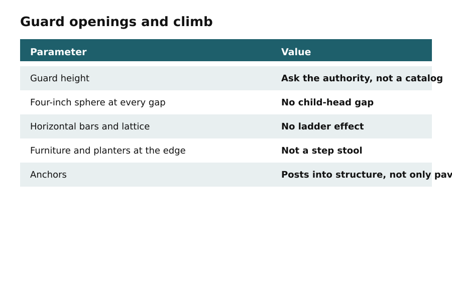
Local height rules win. The sphere test is a check, not a substitute for code.
Guarded Edge Systems Blueprint: Railings, Screens, And Barriers Chapter Introduction Step onto a terrace and your eyes travel to the edge. That boundary defines how free you feel, how safe your children are, and how calm the space appears. In the previous chapter, you mapped your family routines and clarified a vision for a safe, stylish terrace. Now you are ready to turn that vision into the physical guard systems that protect without cluttering your view.
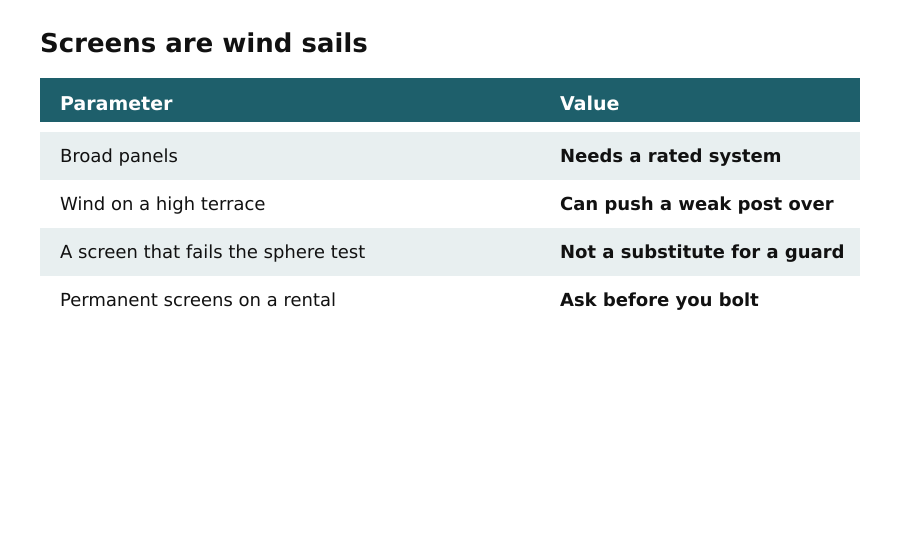
A privacy screen is a load. Furniture weight is not an anchor.
This chapter gives you the knowledge to select and integrate railings, screens, and barriers that meet kid safety standards, feel visually light, and endure weather over time. You will understand the rules that matter, compare materials and infills, evaluate anchoring and hardware, and learn smart ways to integrate guards into seating and planters. By the end, you will have a practical spec and a phased plan you can implement with confidence.
explore. They lean, climb, and push. Pets squeeze and dart. Adults set down a coffee and look away for a moment. Without a well designed guard system, that everyday behavior can turn into falls, stuck limbs, or broken elements. The challenge is not only safety. You also want to keep your view, avoid a bulky look, and stay within constraints such as homeowner association guidelines, structural limits, and maintenance tolerance. Many products promise both beauty and security, yet they can introduce climbable patterns, sharp corners, corrosion, or distracting visual noise. The core problem is finding solutions that align with your family's routines, local code, and your aesthetic without inviting clutter or creating new hazards.
Height And Openings. Guards should meet local minimum height standards, often between 36 and 42 inches depending on the setting and jurisdiction. No opening should allow a 4 inch sphere to pass. This single guideline is simple and powerful. If a ball with a 4 inch diameter cannot pass, a child's head cannot pass. Anti Climb Thinking. Eliminate horizontal members that form a ladder effect. Favor vertical balusters, solid panels, or perforated panels with small holes. Keep furniture and planters a safe distance from edges so they do not become step stools.
Anchoring And Hardware Integrity. Use anchors, posts, and fasteners suited to your structure and climate. Stainless steel grade 316 is best for coastal settings. Stainless steel grade 304 is typical inland. Powder coated hardware avoids rust and heat glare. Quality fasteners and periodic checks are as important as the guard material. Aesthetic Integration With Function. Integrate guards with benches, planters, and storage to achieve calm lines and avoid clutter. Screens can serve double duty as wind and privacy barriers while meeting the 4 inch sphere rule. Keep the palette consistent so the guard becomes part of the terrace, not a noisy afterthought.
your terrace and note where a fall could occur. Most residential terraces require a guard when the drop is significant, often around 30 inches or more, but check your local code. Aim for guard heights in the range required by your area. If you are unsure, design for the stricter standard. It is easier to meet a taller requirement than to retrofit later. Apply the 4 inch sphere rule to every opening, including at the base near the floor, around posts, and at the latch of any gate.
Design out climbability. Children climb when they see a pattern that looks like steps. Horizontal bars, cable runs, decorative lattice, and staggered slats invite it. Vertical balusters spaced less than 4 inches apart do not. Solid tempered glass panels do not. Perforated metal with small diameter holes does not. If you love the look of a horizontal line, use it as a top rail only, with a continuous infill below that is non climbable.
Comparing Railing Systems Tempered Glass With Protective Film. Glass delivers an open view and a clean look. Choose tempered glass for strength. Add a protective film or select laminated safety glass to help prevent shatter scatter if breakage occurs. Specify edges that are polished and rounded. Avoid a bottom gap larger than 3 inches. Glass shows smudges, so plan for easy cleaning access and consider a soft matte finish if glare is a concern.
Do this
Map every drop
Write the sphere test on the drawing
Mark furniture setback from the edge
Today's output
Map every drop
Write the sphere test on the drawing
Mark furniture setback from the edge
Day 5
Before you modify a terrace
In this apartment
Rental: Arjun cannot treat a compact Bengaluru terrace like a house he owns. Society rules apply too.
Reversible first. Permanent work needs approval and, often, a professional.
Today's output: two lists — what you may place without altering the building, and what needs landlord, HOA, apartment association, or society approval.
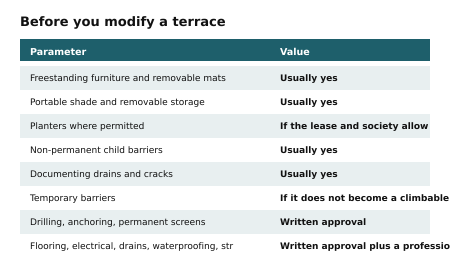
Ask the landlord, HOA, or society before anything that touches the building.
Usually reversible: freestanding furniture, removable mats, planters where permitted, portable shade, removable storage, and non-permanent child barriers where they are appropriate and still meet opening rules.
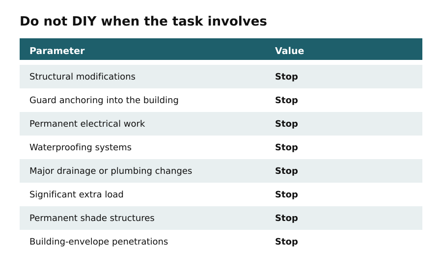
Detection and furniture layout can stay yours. The building cannot.
Get approval before drilling, anchoring guards, installing permanent screens, altering flooring, electrical modifications, plumbing or drain changes, waterproofing, structural changes, or exterior façade work. Association and HOA rules can be stricter than the lease.
Do this
Circle reversible items
Write who must approve the rest
File the Do not DIY list on the fridge
Today's output
Circle reversible items
Write who must approve the rest
File the Do not DIY list on the fridge
Chapter
Kid-Safe Material Matrix: Non-Toxic, Durable Surfaces and Furnishings
This chapter guides you through a practical matrix that compares safety, durability, maintenance, and aesthetics for kid-safe materials in your terrace design.
Day 6
Understanding the Kid Safe Material Matrix
In this apartment
Small terrace: Riya needs surfaces that stay cooler and cleaner with a toddler, not a new named household.
A structured matrix helps compare materials based on essential criteria.
Today's output: a short material list that you can actually maintain, with toxicity and slip as vetoes.
Key criteria include non-toxic certifications, slip resistance ratings, UV stability, corrosion resistance, rounded edges, and tamper-resistant hardware. For instance, when assessing decking, ensure you check the dynamic coefficient of friction (DCOF) values. A DCOF of 0.42 or higher is ideal for wet areas, which is crucial for safety in a family space.
By verifying third-party labels such as Greenguard Gold, OEKO TEX Standard 100, and FSC for wood, you can build confidence in your material choices. Testing samples on your terrace helps you see how they behave in your specific climate, ensuring they meet your family's needs.
Do this
Create a Kid Safe Material Matrix spreadsheet.
Include columns for Safety, Durability, Maintenance, and Aesthetics.
Verify non-toxic certifications for all materials.
Test samples in your climate before making final decisions.
Before you move on
Create a Kid Safe Material Matrix spreadsheet.
Include columns for Safety, Durability, Maintenance, and Aesthetics.
Verify non-toxic certifications for all materials.
Test samples in your climate before making final decisions.
Day 7
Choosing the Right Flooring and Surface Options
In this apartment
Rental: Anita in a compact Bengaluru rental. Flooring changes need approval; a removable mat may not.
Selecting the right flooring is crucial for safety and comfort.
Decking sets the tone for comfort and safety on your terrace. When assessing flooring options, consider slip resistance, thermal behavior, and upkeep. For example, capped composite decking is an excellent choice as it resists staining and splintering. Look for products with textured surfaces and slip resistance values. A DCOF of 0.42 or higher is recommended for wet areas, ensuring safety for children playing outside.
Porcelain pavers on pedestals are another viable option. They resist stains and remain dimensionally stable, making them suitable for drainage. Look for tiles with R ratings, R11 or higher, which indicate enhanced grip in wet conditions. Ensure the edges are rectified and smooth to avoid trip hazards. Testing the thermal comfort of the color you choose is also essential; lighter tones tend to stay cooler underfoot.
Rubber play tiles are ideal for play zones, providing cushioning and traction. Ensure they meet impact attenuation ratings for playground safety, often tested to ASTM F1292. Select tiles with good slip resistance and a sealed finish to resist UV fade and microbial growth. Avoid strong odors by checking for VOC emission data.
Drainage is not a tile color. Pedestals and open joints only help if water can still reach the drains. Do not lay a sheet that dams the slab. If the floor looks sound, that is not proof it can take extra stone or wet soil.
Do this
Assess each flooring option using the Kid Safe Material Matrix.
Verify slip resistance ratings for all surfaces.
Choose lighter colors for decking to reduce heat absorption.
Test thermal comfort with samples before installation.
Before you move on
Assess each flooring option using the Kid Safe Material Matrix.
Verify slip resistance ratings for all surfaces.
Choose lighter colors for decking to reduce heat absorption.
Test thermal comfort with samples before installation.
Day 8
Selecting Durable Finishes and Metals
In this apartment
Monsoon terrace: Meera in Mumbai needs metals and coatings that survive salt air and rain, not a second family.
Durable finishes and metals are essential for maintaining safety and aesthetics.
Hardware and finishes are critical components of your terrace. Children interact with these surfaces, so it’s vital to select coatings and metals that resist corrosion and remain smooth. For wood or composite finishes, review the VOC content measured in grams per liter; lower values are better. Many products carry Greenguard or Greenguard Gold certification, indicating low chemical emissions, which is essential for a kid-friendly environment.
Powder-coated aluminum and steel should meet recognized performance standards. AAMA 2604 is a durable choice for residential applications, while AAMA 2605 offers exceptional UV and corrosion performance. Always ask vendors for specification sheets and salt spray test results to ensure longevity in coastal areas. Smooth finishes reduce snag risks, which is particularly important for children.
Tamper-resistant hardware is crucial for safety. Select fasteners that kids cannot easily loosen, such as tamper-resistant Torx screws and captured nuts. For gates and storage latches, prefer keyed or combination locks that hide mechanisms to prevent curious hands from tampering.
Do this
Choose low VOC finishes for all wood and composite materials.
Verify powder coating standards for metals based on your environment.
Select tamper-resistant hardware for safety.
Inspect all finishes and metals for smoothness and durability.
Before you move on
Choose low VOC finishes for all wood and composite materials.
Verify powder coating standards for metals based on your environment.
Select tamper-resistant hardware for safety.
Inspect all finishes and metals for smoothness and durability.
Day 9
Furnishings, Textiles, and Planters for Safety and Comfort
In this apartment
Small terrace plus pets: Riya's terrace is used by a toddler and a small dog. Planters are furniture with wet weight.
Choosing the right furnishings and textiles enhances safety and comfort.
Today's output: furniture and planters placed so they cannot become steps, sails, or toxin shelves.
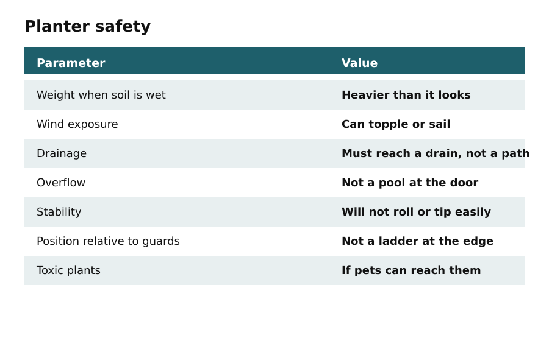
Wet soil is heavy. A pretty pot is still a load and a possible step.
Planter safety: count the weight when soil is wet; check wind; keep drainage and overflow off walking paths and away from door thresholds; keep pots stable; keep them off the guard line; do not stack them into a climbing stair; skip plants that are toxic to pets if pets can reach them.
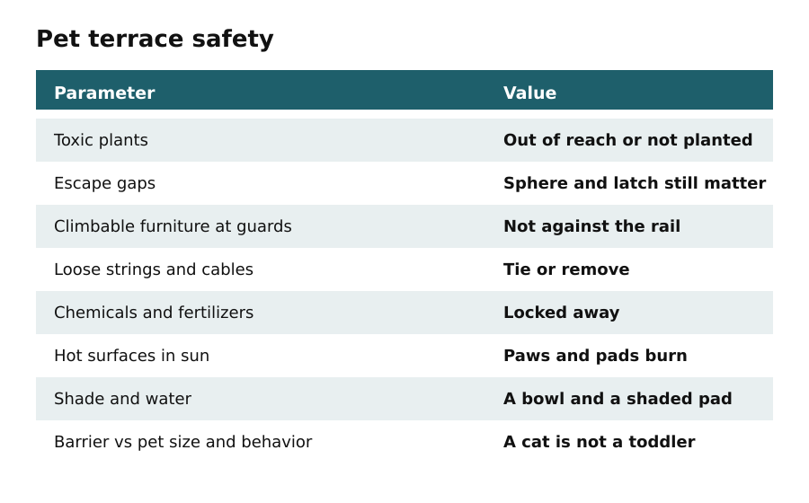
Child rules still apply. Pets add escape, chew, and heat risks.
Pet terrace safety: no toxic plants in reach; no gaps a small pet can escape; no climbable furniture against guards; no loose strings or cables; no unstable planters; no accessible chemicals or fertilizers; avoid hot surfaces in strong sun; provide shade and water; match barriers to the pet's size and behavior.
Do this
Weigh wet-soil risk
Walk the edge as a pet would
Move climbable pieces inward
Today's output
Weigh wet-soil risk
Walk the edge as a pet would
Move climbable pieces inward
Chapter
Family Zoning Framework: Designing Play, Lounging, And Dining Zones
Family Zoning Framework: Designing Play, Lounging, And Dining Zones Chapter Introduction You want a terrace that feels calm, looks beautiful, and works for your family daily. The secret is not more furniture or more toys. It is a clear, thoughtful zone plan that quietly guides behavior, protects kids near edges, and keeps movement stress free. When zones are right, you relax more, kids play longer
Day 10
Family Zoning Framework: Designing Play, Lounging, And Dining Zones
In this apartment
Large terrace: a multigenerational rooftop with play in sight of dining — still one family, not a new novel.
Today's output: five zones that leave drains open, keep play in sight, and do not pile wet soil and stone on one bay of slab.
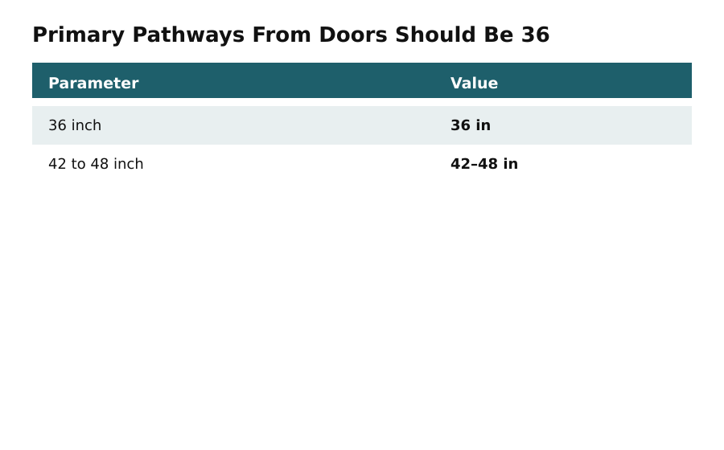
Primary pathways from doors should be 36 inches wide at minimum, 42 to 48 inches is ideal if space allows for two way passing. Maintain a buffer of at least 24 inches from guarded edges for climb prone objects, including benches, planters, and play features.
Family Zoning Framework: Designing Play, Lounging, And Dining Zones Chapter Introduction You want a terrace that feels calm, looks beautiful, and works for your family daily. The secret is not more furniture or more toys. It is a clear, thoughtful zone plan that quietly guides behavior, protects kids near edges, and keeps movement stress free. When zones are right, you relax more, kids play longer, and meals do not compete with racing scooters or dripping pool toys.
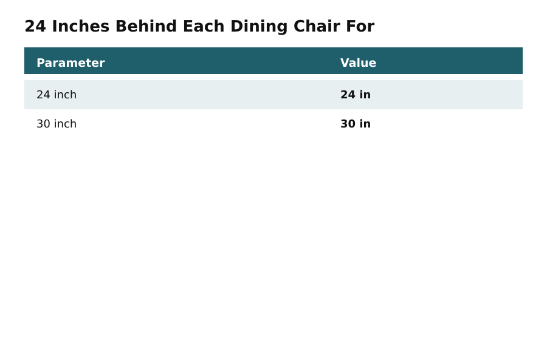
Leave 24 inches behind each dining chair for pull back movement, 30 inches is ideal for ease of seating with boosters.
Building on the guarded edges and safe materials you selected earlier, this chapter translates routines into distinct, easy to supervise zones. You will learn how to position play, lounging, dining, gardening, and storage, how to size pathways and clearances, and how to mark boundaries without clutter or climb risks. By the end, you will have a practical map that supports family life today and evolves as kids grow.
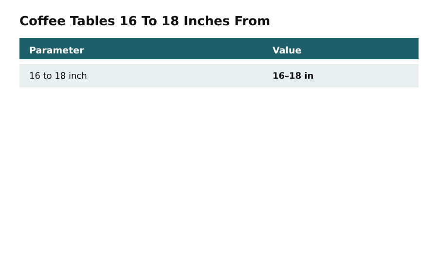
Set coffee tables 16 to 18 inches from seating fronts for reach without shin bashing.
Most terraces start as one big space. Without defined zones, toys creep into walkways, chairs block doors, and play edges toward railings where climbing becomes tempting. Sun exposure roasts one area while wind whips another, so people crowd into the same corner. Visual noise builds. You spend more time managing than enjoying. Unclear circulation compounds the issue. Pathways narrow unexpectedly, dining chairs bump into loungers, and storage bins sit where everyone needs to walk. The result is spilled drinks, stubbed toes, and constant redirecting of kids away from edge risks. Even thoughtful material choices from the previous chapter cannot fix a layout that fights your routines.
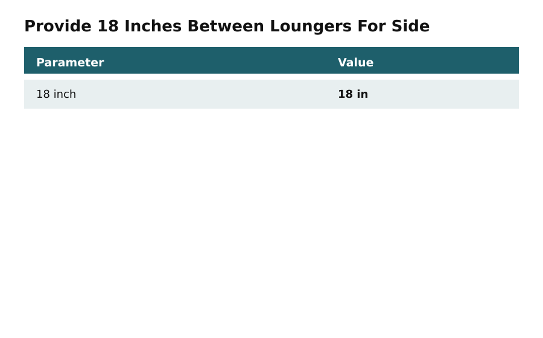
Provide 18 inches between loungers for side tables and safe passage.
Use the Family Zoning Framework, a simple method to organize your terrace into five interoperable zones. Each zone earns a place based on adjacency, sightlines, sun and wind orientation, and noise separation. The framework includes circulation standards and subtle markers that maintain style while reinforcing boundaries. Play Zone in view of the main seating and kitchen door, with soft surfacing and no climb risks near edges Lounging Zone with modular seating, side tables, and layered shade, anchored away from primary circulation Dining Zone sized for your household plus guests, with safe chair footprints and booster options Gardening Zone using planters as buffers and teaching tools, positioned to block wind or screen views without creating ladders Storage Zone that swallows toys and cushions, strategically placed for quick resets and clear pathways There are four rules that shape the plan. Keep primary sightlines to play uninterrupted. Setback climb prone items from edges. Honor circulation widths and furniture clearances. Mark boundaries with low profile cues, not tall fences or visual clutter. Think of the terrace as a calm storyboard of your day.
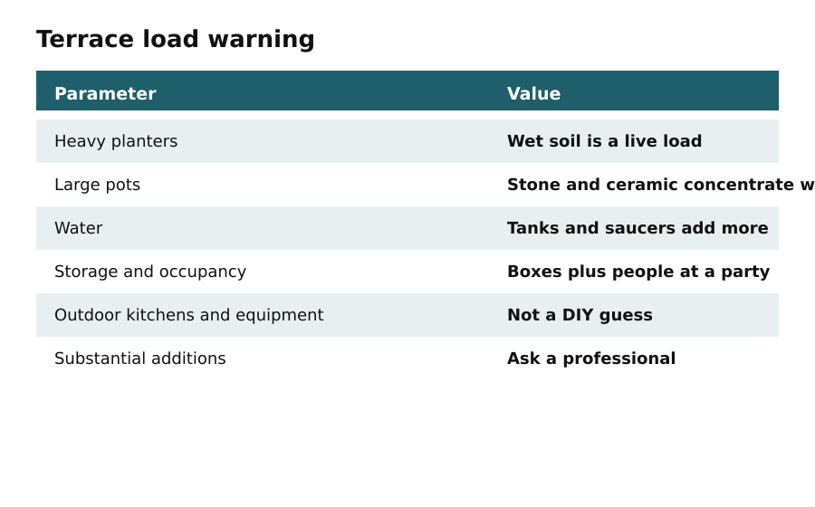
Looks solid is not a capacity rating.
Never assume a terrace can safely support extra concentrated load because the floor looks structurally sound. Planters, wet soil, stone pots, water, storage boxes, people, and outdoor kitchens add up. For substantial additions, get appropriate professional confirmation.
Chapter
Space-Specific Layout Templates: Small, Medium, And Large Terraces
This chapter provides ready templates for small, medium, and large terraces, ensuring a layout that fits your specific space without clutter and guesswork. By applying the principles of safety, flow, and visual calm, you can create an organized outdoor area that meets your family's needs.
Day 11
Small Terraces: Micro Balconies Up To About One Hundred Twenty Square Feet
In this apartment
Small terrace: Riya's Pune balcony. One bistro set, one planter line, no extra fictional household.
Compact stacking of zones is essential in small terraces to maximize functionality while maintaining safety.
To optimize the small balcony, start by placing a slim storage bench along the wall opposite the guard. The bench should have a depth of 18 inches and a length between 60 to 72 inches. This provides both seating and storage without obstructing pathways.
Next, create a two-person dining nook adjacent to the bench using a round bistro table with a diameter of 24 to 28 inches and two folding chairs. Round tables ease circulation because their corners do not protrude, making movement around the space more fluid.
Finally, float a small play rug in the remaining open area, measuring roughly 36 by 48 inches, and add one portable toy bin under the bench. This arrangement allows for safe play while keeping the area organized.
Do this
Measure your balcony dimensions accurately.
Select a slim storage bench of appropriate size.
Choose a round bistro table and folding chairs for dining.
Add a play rug and portable toy storage under the bench.
Ensure a clear pathway of at least 30 inches along the guard.
Before you move on
Measure your balcony dimensions accurately.
Select a slim storage bench of appropriate size.
Choose a round bistro table and folding chairs for dining.
Add a play rug and portable toy storage under the bench.
Ensure a clear pathway of at least 30 inches along the guard.
Day 12
Medium Terraces: About One Hundred Twenty To Three Hundred Square Feet
In this apartment
Medium terrace: Meera's Mumbai slot. Dining plus play in sight, furniture that can move before rain.
Balanced lounging and dining arrangements are key in medium terraces to ensure comfort and functionality.
Begin by sizing the dining zone for four to six people, using a rectangular table that is 60 to 72 inches long and 36 inches wide, with six chairs. Position the table parallel to the longest edge of the terrace, ensuring at least 36 inches of clearance behind the chairs for easy movement.
Next, create a lounging cluster with a compact sectional or two lounge chairs plus an ottoman. Arrange the seating to face inward toward the dining table and play corner, fostering interaction and comfort. Include two side tables instead of a large coffee table to ease movement.
Designate a play corner in the most visible quadrant from the seating area. Use soft surfacing, such as an outdoor rug or foam tiles, and include one low play shelf. Define this corner with a planter that sits inside the guard setback, ensuring safety.
Do this
Measure the terrace dimensions accurately.
Select a rectangular dining table and chairs that fit the space.
Arrange lounging furniture to face the dining and play areas.
Create a visible play corner with soft surfacing and storage.
Ensure all zones have appropriate setbacks from the guard.
Before you move on
Measure the terrace dimensions accurately.
Select a rectangular dining table and chairs that fit the space.
Arrange lounging furniture to face the dining and play areas.
Create a visible play corner with soft surfacing and storage.
Ensure all zones have appropriate setbacks from the guard.
Day 13
Large Terraces: Over Three Hundred Square Feet
In this apartment
Large terrace: a Mumbai rooftop for a multigenerational family. Supervision lines matter more than a fire bowl.
A multi-zone arrangement with clear pathways and supervision lines is crucial in large terraces to enhance usability and safety.
Today's output: a central spine from the door to a planting cluster — not an open flame — wide enough to walk, with dining near service and play in view.
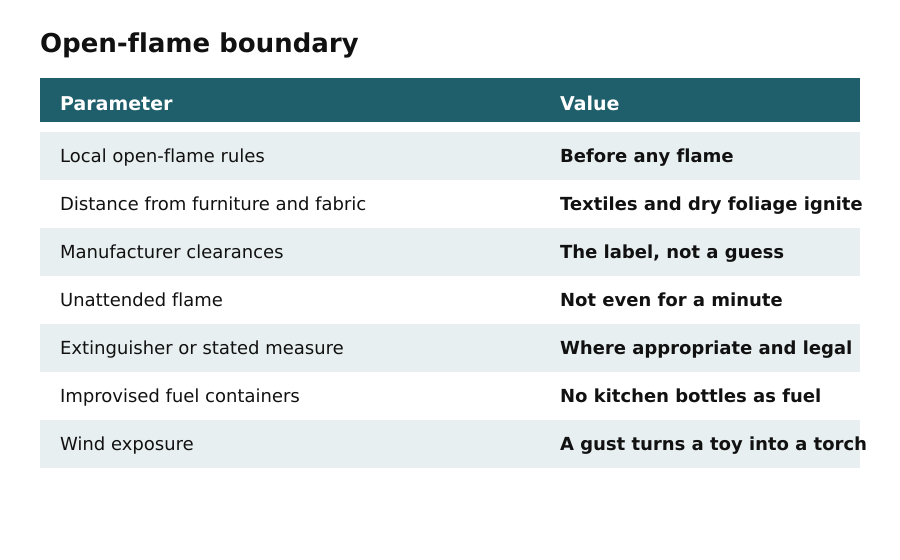
If flame is not essential, omit it. Dining does not require a bowl of fire.
If any open flame remains on the terrace, follow local rules first. Keep flames away from combustible furniture and textiles. Maintain manufacturer-required clearances. Never leave an open flame unattended. Keep an appropriate extinguisher or fire-safety measure accessible where appropriate. Do not use improvised fuel containers. Consider wind before using any flame-producing equipment. If those rules are too heavy for this household, do not put a fire bowl on the drawing.
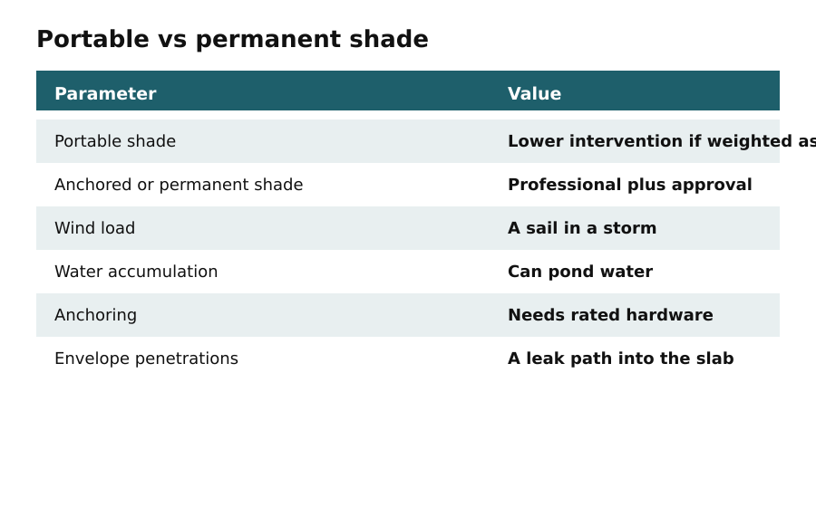
An umbrella is not a pergola. Penetrations are waterproofing.
Portable shade is generally a lower intervention. Anchored or permanent shade needs professional assessment and required approval. Shade that punctures the envelope is a waterproofing risk.
Do this
Draw the spine to plants, not flame
Mark shade as portable or permanent
Set fire rules or delete flame
Today's output
Draw the spine to plants, not flame
Mark shade as portable or permanent
Set fire rules or delete flame
Chapter
Clutter-Free Storage And Organization Playbook
This chapter focuses on creating an organized and clutter-free terrace that enhances safety and usability for families. By integrating storage solutions into your layout, you can maintain a calm and inviting outdoor space.
Day 14
Integrating Storage into Your Layout
In this apartment
Small terrace: Ravi on Riya's size of terrace — toys need a bench, not a cabinet bolted without permission.
Storage should be seamlessly integrated into the layout to enhance safety and usability.
Built-in benches along interior walls are essential for handling everyday items and removing the need for freestanding boxes in circulation paths. A depth of 16 to 18 inches is comfortable for sitting and ample for toy bins and cushions. Include a sealed base to prevent items from rolling underneath. Choose lids with soft close hinges and finger cutouts instead of external handles to enhance safety.
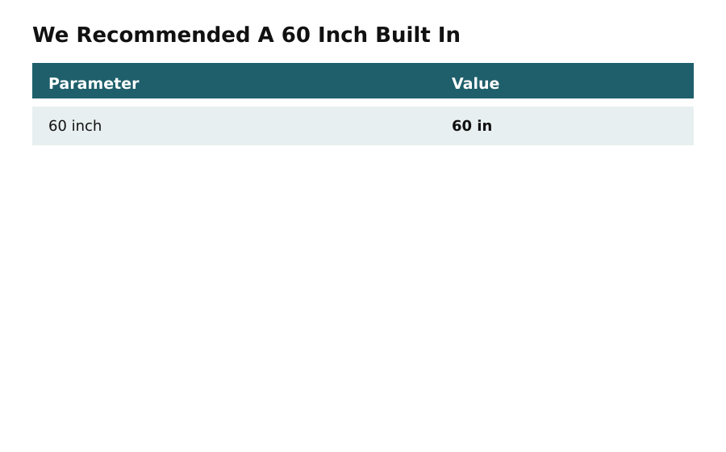
We recommended a 60 inch built in bench along the interior wall with three clear bins inside, art, active toys, and cushions.
Slim deck boxes can slide into negative spaces at the ends of sofas or under console tables. Measure the clearance under tables you already own; many under table boxes can be 10 to 12 inches high and still hold sketch pads, chalk, and small bats. Fit foam or rubber bumpers on lids and corners, and select boxes with gasket seals to keep out rain and dust.
Many under table boxes can be 10 to 12 inches high and still hold sketch pads, chalk, and small bats.
Vertical cabinets are for seasonal items if you are allowed to anchor them. Keep them shallow, on an interior wall you may fix to, never as a climb next to a guard. Ask the vendor about tip-over tests. Permanent anchors are a permission item.
Do this
Measure your terrace and plan for built-in benches along interior walls.
Select slim deck boxes that fit under existing furniture.
Choose vertical cabinets that are shallow and can be anchored safely.
Before you move on
Measure your terrace and plan for built-in benches along interior walls.
Select slim deck boxes that fit under existing furniture.
Choose vertical cabinets that are shallow and can be anchored safely.
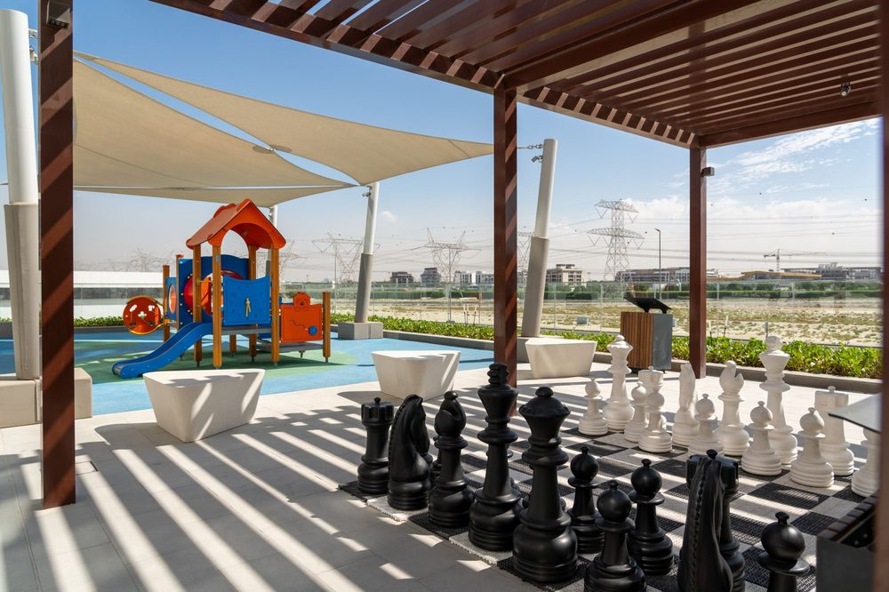
Day 15
Organizing by Micro Zones and Rotation
In this apartment
Rental: Priya on a compact Bengaluru terrace. Micro-zones must stay reversible.
Organizing storage by micro zones enhances accessibility and encourages kids to return items to their designated places.
Create small, clear categories for different activities such as art, sports, and gardening. Label transparent bins with words and icons so children can self-serve and self-return items. This empowers them to take responsibility for their belongings and helps maintain order.
Implement a toy rotation system where half of the toys are stored away while the other half is accessible. Rotate toys on a weekly or biweekly schedule to keep the terrace feeling fresh without adding clutter. This approach not only reduces the number of toys in circulation but also re-engages children with toys they may have forgotten about.
Ensure that each storage piece is sized appropriately for its task. For example, art supplies should be easily accessible near the dining table, while sports equipment should be stored near the play area. This strategic placement aligns with family routines and minimizes the time spent searching for items.
Do this
Create clear categories for different activities in your storage.
Label bins with words and icons for easy identification.
Establish a toy rotation schedule to keep the space fresh.
Before you move on
Create clear categories for different activities in your storage.
Label bins with words and icons for easy identification.
Establish a toy rotation schedule to keep the space fresh.
Day 16
Finishing Touches for Safety and Visual Calm
In this apartment
Monsoon terrace: Aditi on Meera's Mumbai slot wants calm storage that still leaves drains visible.
Finishing touches and hardware details enhance both safety and aesthetics in terrace storage solutions.
Choose neutral finishes that match the surrounding walls and floors to help storage visually disappear. This allows foliage and sky to be the main visual elements of the terrace. If you want a micro pop of color, use it on bin labels rather than on storage fronts to maintain a calm atmosphere.
Select concealed pulls or recessed handles to deter climbing and enhance safety. Soft close hinges should be used on all lids to prevent slams and protect fingers. Pinch guards at lids and tamper-resistant hardware are essential for any storage that children can access.
For vertical cabinets, ensure they include wall anchors and meet recognized tip-over safety practices. If the cabinet is tall, anchor it to a structural wall or deck surface to prevent accidents. Keep the bottom shelf dedicated to heavy items, while lighter items should be placed on higher shelves to reduce the risk of tipping.
Do this
Choose neutral finishes for storage that match your terrace palette.
Install soft close hinges and pinch guards on all lids.
Anchor tall cabinets to structural walls or surfaces.
Before you move on
Choose neutral finishes for storage that match your terrace palette.
Install soft close hinges and pinch guards on all lids.
Anchor tall cabinets to structural walls or surfaces.
Chapter
Budget And Phased Implementation Plans: From Weekend Makeover To Full Renovation
This chapter outlines a structured approach to terrace planning, focusing on safety, budget management, and phased implementation to create a usable and beautiful outdoor space.
Day 17
Why Phasing Your Terrace Works
In this apartment
Small terrace: Riya phases safety first so the family can use ten feet of slab without a full renovation.
Phasing your terrace project allows for immediate safety and gradual improvement without overwhelming your budget or time.
Phasing breaks down a large project into manageable stages, allowing you to focus on immediate needs first. For Riya, this means starting with safety features like edge guards and circulation paths, ensuring her children can play safely while she plans the next steps.
By prioritizing safety and functionality, Riya can enjoy her terrace sooner rather than later. This approach minimizes disruption and allows her family to use the space while improvements continue.
Phased implementation also helps in managing costs effectively. Riya can allocate her budget wisely, spending on essential safety features first, and delaying decorative elements until the terrace is functional.
Day 18
The Terrace Phasing Method
In this apartment
Rental: Vikram on Arjun's compact Bengaluru terrace. Phase one is reversible; guards and waterproofing wait for approval.
The Terrace Phasing Method divides the project into three key stages: Guard and Clear, Build and Store, and Glow and Style.
Vikram starts with the first phase, Guard and Clear, where he installs edge protections and gates to ensure safety. He also clears clutter to create safe circulation routes, which is crucial for a space that will be used by children.
In the second phase, Build and Store, Vikram upgrades to durable, kid-safe materials and adds storage solutions tailored to his terrace's micro zones. This investment ensures longevity and keeps the area organized.
Finally, in the Glow and Style phase, Vikram layers in lighting and decor that enhance the mood without creating visual clutter. This careful selection of durable, low-maintenance pieces ensures the terrace remains inviting and functional.
Day 19
Cost Tiers And Smart Allocation
In this apartment
Medium terrace: Anisha on Meera's Mumbai size. Essential money goes to guards and drainage, not décor.
Understanding cost tiers helps in allocating budget effectively for immediate safety and long-term improvements.
Anisha learns about the three cost tiers: Weekend Makeover (₹250 to ₹1,000), Essential Upgrade (₹3,000 to ₹10,000), and Full Renovation (₹15,000 to ₹40,000 and above). She decides to start with a Weekend Makeover, focusing on immediate safety features like modular child barriers and non-slip mats.
For the Essential Upgrade, Anisha plans to install permanent guard systems and upgrade her flooring to slip-resistant tiles. This phase will involve some DIY tasks, but she will hire professionals for anchoring and any permanent electrical work.
Anisha understands that smart allocation means prioritizing safety and clutter reduction first. She will delay spending on decorative items until the essential safety features and durable surfaces are in place.
A weekend makeover is only Phase one: reversible furniture, mats, and planters where permitted. It is not a substitute for guards, drainage, or professional work. Do not spend the weekend drilling, waterproofing, or running permanent power.
Do this
Keep the weekend reversible
Do not drill or waterproof this weekend
Before you move on
Keep the weekend reversible
Do not drill or waterproof this weekend
Day 20
Procurement And Vendor Vetting Essentials
In this apartment
Large terrace: the multigenerational rooftop hires for structure and waterproofing, not for moving chairs.
A disciplined procurement process saves money and time while ensuring quality materials and services.
Rahul starts by defining the scope of his project, writing a one-page brief that outlines goals, zones, and must-have safety items. This brief will guide his purchasing decisions and keep him focused.
Next, he creates a bill of materials, listing all necessary items such as guard systems, surfaces, storage, and lighting, along with their specifications. This detailed list helps prevent impulse buys and ensures he gets the right products.
Rahul shortlists vendors by asking for three quotes per category and verifying their credentials. He checks for outdoor warranties and installation documentation to ensure he is working with reliable professionals.
Chapter
Code And Safety Compliance: Standards, Inspections, And Approvals
This chapter translates code language and HOA rules into simple decisions you can make while designing, buying, and building. You will learn exactly what guard heights, opening limits, climb resistance, gate and latch placement, wind load, slip resistance, electrical safety, and egress mean in practice.
Day 21
Why Compliance Fails On Terraces
In this apartment
Small terrace: Priya on Riya's Pune terrace assumed the guard was tall enough. Measure; do not assume.
Compliance failures often stem from assumptions rather than measurements.
Many terrace projects fail compliance for simple reasons. Residents often assume guardrails are tall enough without measuring. In Priya's case, she chose a beautiful design but neglected to check the height, leading to a compliance issue.
Another common challenge is the HOA approval cycle. Priya submitted her design but forgot to include the manufacturer's specifications for her chosen materials, resulting in delays and frustration.
To avoid these stalls, it's crucial to organize information in a way that reviewers expect and verify key dimensions during the design phase.
Day 22
The Terrace Compliance Blueprint
In this apartment
Rental: Riya on Arjun's compact Bengaluru terrace. Compliance includes the lease and the society, not only a catalog height.
Compliance is a continuous loop of design, purchase, installation, and inspection.
Think of compliance as a four-phase loop that you run once during the build, then lightly each season. The phases are design, purchase, installation, and inspection. Riya mapped out her terrace, ensuring each phase was documented with photos and measurements.
During the design phase, Riya checked standards for guard height and opening sizes, ensuring her design met local regulations. She also documented her choices to streamline the approval process.
Maintenance is an ongoing phase that keeps everything safe over time. Riya planned seasonal checks to ensure her terrace remained compliant and safe for her family.
Day 23
Standards Explained In Practice
In this apartment
Monsoon terrace: Meera's Mumbai slot. Slip, drainage, and outdoor-rated power matter as much as guard height.
Understanding specific standards is crucial for safety and compliance.
Most residential balcony codes require guardrails or barriers when the drop is a certain height above the ground. Aman discovered that the minimum guard height in Mumbai is 42 inches, and his installation was only 36 inches. He quickly added extensions to meet the requirement.
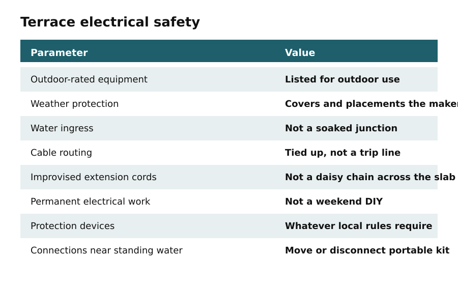
Outdoor-rated is not a kitchen power strip. Permanent work is professional.
Openings in guards should be small enough that a typical sphere cannot pass through. Aman used a 4-inch sphere test to ensure that his guard design was compliant, avoiding any potential hazards for his children.
Climb resistance is another critical factor. Aman removed horizontal elements that could encourage climbing and ensured that furniture was placed at a safe distance from the guard.
Electrical safety on a terrace: use outdoor-rated equipment; give it appropriate weather protection; protect against water ingress; route cables so they cannot trip anyone; no loose cables on walking paths; no improvised extension-cord arrangements; permanent electrical work is professional work; use protection devices required locally; keep connections away from standing water. This book does not prescribe installation details that depend on local code.
Do this
List every outlet and lamp
Mark cords that cross a path
Write 'pro only' on permanent power
Today's output
List every outlet and lamp
Mark cords that cross a path
Write 'pro only' on permanent power
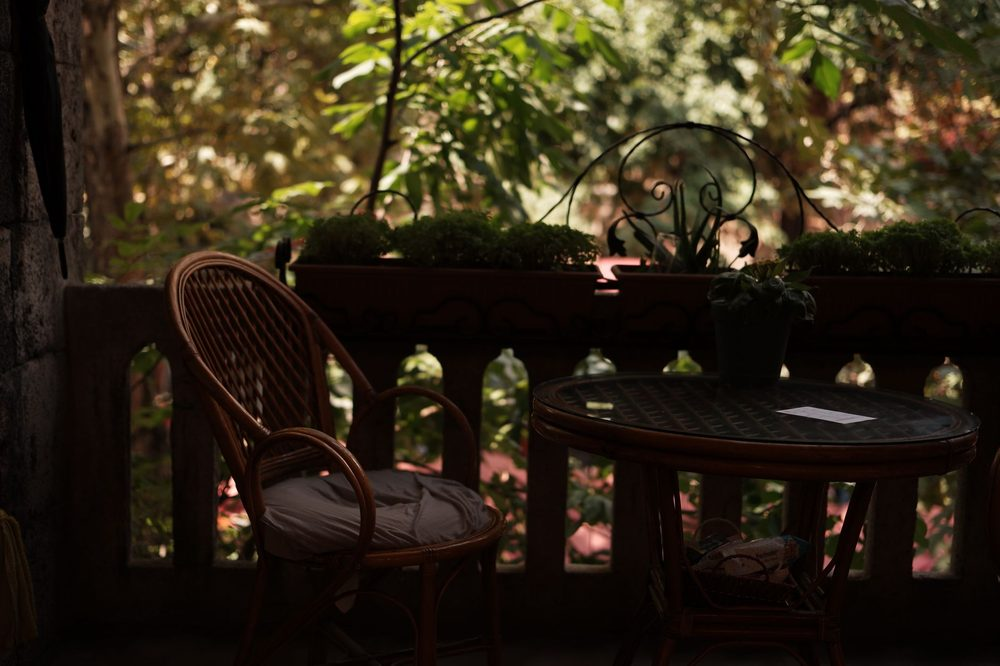
Day 24
Step By Step Compliance Plan
In this apartment
Large terrace: the same multigenerational rooftop files HOA, society, and professional specs before anyone drills.
A structured compliance plan simplifies the approval process.
During the design phase, Priya created a simple sketch of her terrace, annotating guard heights, opening sizes, and clear egress paths. This visual guide helped her stay organized and compliant.
In the purchase phase, Priya saved cut sheets for each item, ensuring they met safety standards. She confirmed GFCI and weatherproof markings for her outlets, which were crucial for outdoor safety.
For the installation phase, Priya meticulously measured and photographed her work, documenting guard heights and anchor placements to avoid any compliance issues during inspection.
Avoidable mistakes: assuming a guard is tall enough without measuring; submitting HOA or society papers without product specs; drilling a waterproofed slab; treating a rental like a house you own. Log each miss and who must approve the fix.
Chapter
Maintenance And Seasonal Refresh: Keeping It Safe And Stylish Year-Round
This chapter serves as your maintenance compass, guiding you through the essential steps to keep your terrace safe and stylish throughout the year. From quarterly inspections to seasonal cleaning routines, you will learn how to protect your investment and ensure a calm retreat for your family.
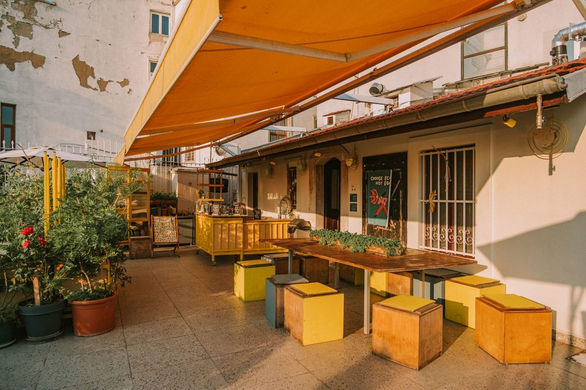
Day 25
The Calm Cycle: A Framework for Ongoing Care
In this apartment
Small terrace: Riya and Arjun's Pune slab after the toddler's first monsoon season — still the same household.
The Calm Cycle simplifies maintenance into manageable habits.
The Calm Cycle consists of four key actions: Clean, Assess, Log, and Modify. This framework is designed to be fast and repeatable, allowing you to maintain your terrace without feeling overwhelmed.
Start with Clean. Regularly remove dirt, pollen, and debris from surfaces to prevent them from bonding and trapping moisture. This simple step is the most cost-effective way to extend the life of your terrace materials and maintain slip resistance.
Next, Assess. Inspect guards, fasteners, anchors, screens, and textiles for any signs of wear or looseness. Look for changes since your last check, such as wobbly railings or cracked sealant lines. This proactive approach helps you catch small issues before they escalate.
Log is not a diary of vibes. Use one row per item: guards, flooring, drainage, furniture, planters, lighting or electrical, shade. Condition, action, date.
Do this
Clean surfaces weekly
Assess condition quarterly
Log findings after each inspection
Modify setup based on usage and growth
Before you move on
Clean surfaces weekly
Assess condition quarterly
Log findings after each inspection
Modify setup based on usage and growth
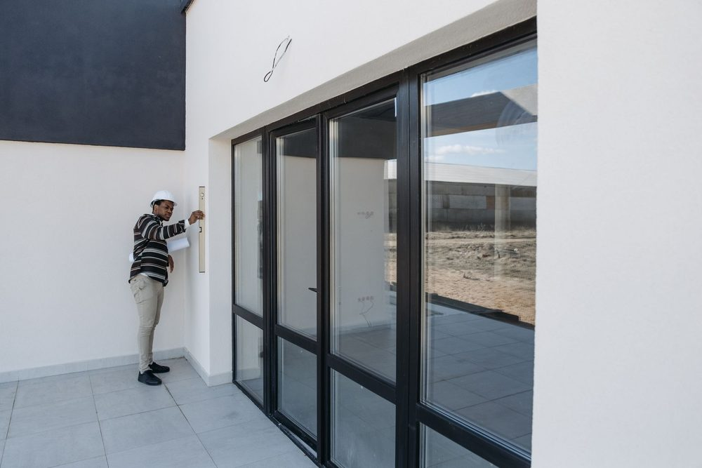
Day 26
Terrace water management and waterproofing
In this apartment
Monsoon terrace: Meera after rain on a Mumbai slab. Standing water is a building problem, not a mopping hobby.
Drainage is not waterproofing. Sealing a crack is not a waterproofing system.
Today's output: a water-management checklist plus a waterproofing boundary. Surface drainage, a failed waterproofing layer, and a structural moisture problem are three different escalations.
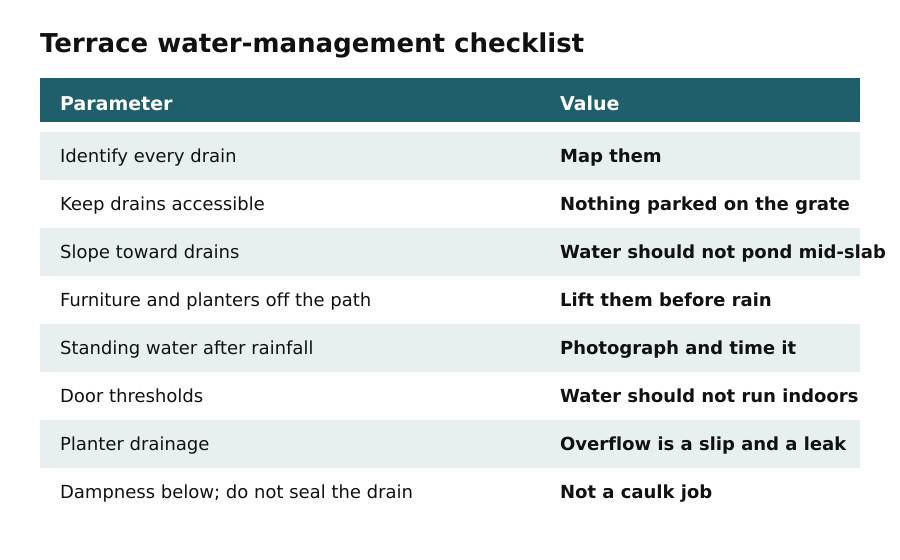
Never block a drain to 'neaten' the floor.
Find every drain and keep it accessible. Check that the slab still falls toward those drains. Keep furniture and planters off the drainage path. After rain, look for standing water, wet door thresholds, planter overflow, and persistent dampness below or around the terrace. Escalate suspected waterproofing failure to the appropriate professional. Never permanently seal or obstruct a drainage path as a DIY fix.
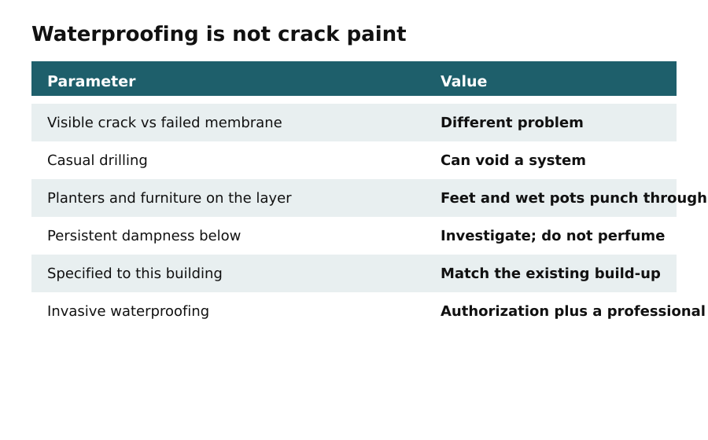
A terrace leak is a building system. DIY tubes are not that system.
Waterproofing is not the same as sealing visible cracks. Do not drill through a waterproofed surface casually. Planters and furniture can damage waterproofing layers. Persistent dampness below the terrace needs investigation. Systems should be specified and installed to match the existing building. Renters and homeowners should not do invasive waterproofing without authorization and professional input.
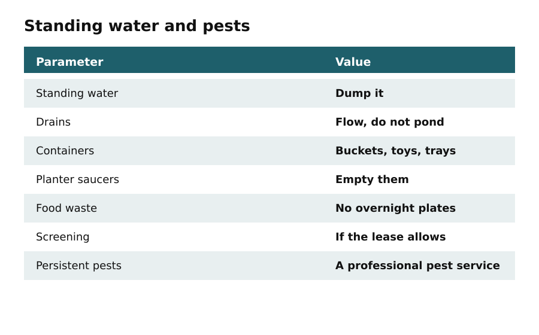
Mosquitoes breed in saucers. Do not start a chemical war on a family terrace.
Pests follow water and food. Empty standing water and containers, keep drains clear, check planter saucers, manage food waste, add screening where appropriate, and escalate a persistent pest problem. This is not a pest-control manual — one page is enough.
Do this
Map drains
Walk the slab after rain
Write who handles waterproofing
Today's output
Map drains
Walk the slab after rain
Write who handles waterproofing
Day 27
Quarterly Inspections: What to Check and When
In this apartment
Rental: Sameer and Priya on a compact Bengaluru terrace. Inspections they can do; repairs they report.
Quarterly inspections help maintain safety and prevent expensive repairs.
Performing quarterly inspections is crucial for preserving the integrity of your terrace. Start by checking guards and railings. Grip the top rail at multiple points and apply gentle body weight to look for any movement. Verify the guard height with a measuring tape to ensure compliance with safety standards.
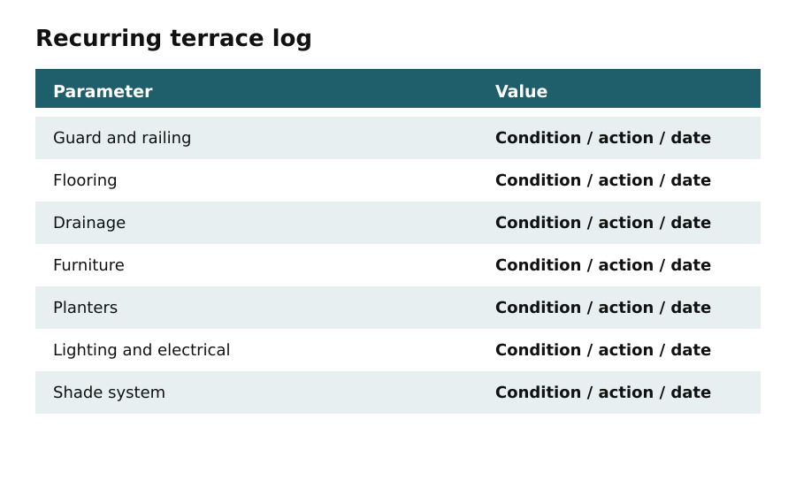
Copy the rows. Fill condition, action, and date. Empty is a missed inspection.
Next, inspect screens and barriers for any tears, frayed edges, or sagging. Ensure that tension is even and that attachment points are secure. Confirm that gaps remain within the safe opening limits established during compliance checks.
Finally, assess anchors and fasteners. Tighten visible screws and bolts that secure furniture tethers and shade structures. If structural anchors are used, confirm they haven't backed out by marking the edge of a bolt head with paint to show movement since the last check.
Do this
Print the log
Fill one row per item
Escalate anything structural or wet below
Today's output
Print the log
Fill one row per item
Escalate anything structural or wet below
Day 28
Cleaning Routines: Preservation and Safety
In this apartment
Monsoon terrace: Meera washes slip films off the Mumbai slab without flooding the neighbor below.
Regular cleaning is essential for preserving materials and ensuring safety.
Cleaning is both a preservation and safety measure. For decking, sweep weekly during leaf season or after storms, and wet mop monthly to maintain a clean surface. In spring and late summer, apply a gentle deck wash, following product instructions to avoid stripping protective coatings.
For metal finishes, wipe stainless steel with a microfiber cloth and a light solution of water and dish soap. Rinse and dry thoroughly to prevent spots. For powder-coated metal, avoid abrasive pads and touch up any chips with color-matched paint to prevent rust.
When it comes to fabrics and rugs, vacuum cushions lightly and spot clean spills immediately. Wash removable covers as directed and reapply a fabric protector each spring to maintain their appearance and durability.
Do this
Sweep decking weekly
Wet mop monthly
Wipe metal finishes regularly
Vacuum and spot clean fabrics
Before you move on
Sweep decking weekly
Wet mop monthly
Wipe metal finishes regularly
Vacuum and spot clean fabrics
Day 29
Seasonal Storage and Protection
In this apartment
Medium terrace: Aditi on Meera's size, packing textiles before a forecast, not a new Delhi subplot.
Proper seasonal storage prevents clutter and protects your terrace materials.
Avoid clutter by planning storage early. Store extra textiles, toys, and seasonal decor in labeled, stackable bins to keep your terrace organized. Use breathable fabric bags for cushions and ensure that bins are kept off the floor on shelves to prevent moisture transfer.
Shade sails and umbrellas should be closed and secured during high wind forecasts, and anchors should be checked afterward to ensure stability. This proactive approach helps maintain the integrity of your terrace during adverse weather conditions.
Additionally, monitor plant care and pest mitigation. Healthy plants contribute to the visual appeal of your terrace, so use a consistent watering schedule and moisture meters for deep planters. Trim dead growth in spring and fall to keep your terrace looking its best.
Do this
Store textiles in breathable bags
Label and stack bins for organization
Close shade structures during storms
Monitor plant health regularly
Before you move on
Store textiles in breathable bags
Label and stack bins for organization
Close shade structures during storms
Monitor plant health regularly
Day 30
Wind, rain, and emergency weather
In this apartment
Monsoon terrace: Meera gets a wind warning on the Mumbai slab. Umbrellas come down before anyone argues about cushions.
Furniture weight is not an anchor. Children and pets come inside when the terrace is unsafe.
Today's output: a wind-event list, a before-and-after rain list, and a severe-weather mode you can run in ten minutes.
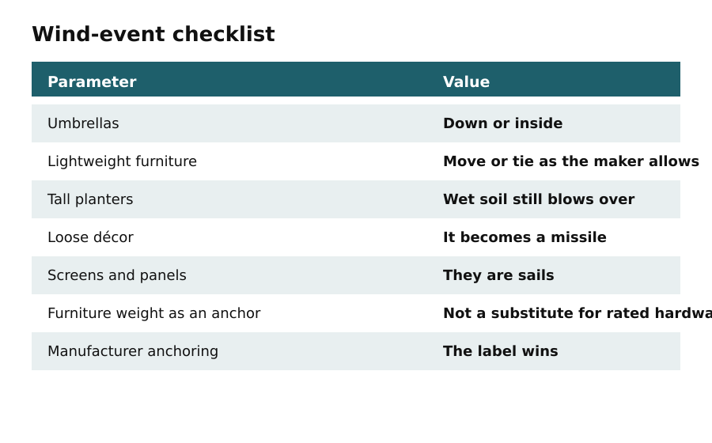
A terrace is a wind tunnel. Toys and umbrellas fly.
When strong winds are expected: close or remove umbrellas; secure lightweight furniture; check tall planters; remove loose décor; inspect screens and panels; do not rely on furniture weight as permanent anchoring; follow manufacturer anchoring requirements.
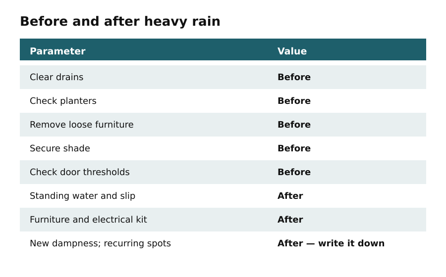
Indian city names in this book are climate illustrations. The checklist is the work.
Before heavy rain: clear drains; check planters; remove loose furniture; secure shade; check door thresholds. After heavy rain: look for standing water and slip films; inspect furniture; check electrical equipment; look for new dampness; document recurring problem areas.
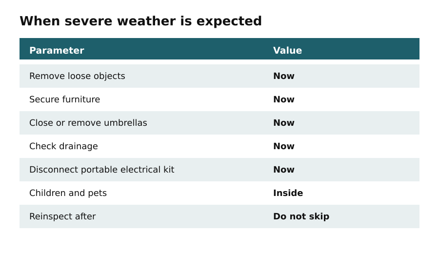
The terrace can wait. People cannot.
When severe weather is expected: remove loose objects; secure furniture; close or remove umbrellas; check drainage; disconnect or move portable electrical equipment as appropriate; keep children and pets away during unsafe conditions; reinspect after the event.
Do this
Run wind mode from the forecast
Clear drains before rain
Reinspect after
Today's output
Run wind mode from the forecast
Clear drains before rain
Reinspect after
Chapter
Printable Code And Safety Compliance Checklist
This checklist is designed to ensure your terrace meets safety standards while maintaining aesthetic appeal. It covers essential aspects like guard heights, opening sizes, and pet containment, making it a vital tool for homeowners and contractors alike. These pages are printables for the 30-day blueprint. They are not extra days.
Printable
Project Overview and Compliance
In this apartment
Use the same household you picked on Day 1. Do not invent a new apartment for a form.
A thorough project overview ensures all safety and compliance measures are documented from the start.
Begin by documenting the project name, address, and planner details. Include the local authority contact for compliance verification. If your Homeowners Association (HOA) approval is required, note it here as well.
Assess site constraints such as wind exposure and local weather patterns. This information is crucial for determining the safety features needed for your terrace.
Record all relevant notes regarding the occupancy type and any specific requirements from local authorities. This will help streamline the approval process.
Do this
Document project name and address.
List planner and installer details.
Note HOA or building approval requirements.
Before you move on
Project name and address
Planner and installer details
HOA approval needed (yes/no)
Site constraints noted
Printable
Guard Edges and Heights
In this apartment
In her Pune apartment, Priya measures the guard edges of her terrace to ensure they are safe for her kids. She records the height from the finished floor to the top of the guard.
Proper guard heights are essential for safety, especially in family-friendly spaces.
Measure the height of the guard from the finished floor and ensure it is consistent across all points. The minimum height should be compliant with local safety regulations, typically around 42 inches for terraces.
Document the materials used for the railing system, including panels and posts. This information is crucial for inspections and future maintenance.
Capture photos during the design and installation stages to provide visual proof of compliance. These photos will be helpful for HOA submissions.
Do this
Measure guard height from finished floor.
Document materials and railing system.
Take design and installation stage photos.
Before you move on
Guard height measured and recorded
Materials documented
Photos taken during design and installation
Printable
Egress and Circulation
In this apartment
Priya ensures that her terrace has clear paths for egress and circulation, especially since she often entertains guests. She checks for obstructions that might block exits.
Maintaining clear paths to exits is crucial for safety and accessibility.
Verify that the path width to exits is at least 36 inches, allowing for easy movement. This is especially important in case of emergencies where quick access is needed.
Check for any obstructions near doors or stairs that could impede movement. Ensure that furniture is arranged to facilitate easy circulation.
Evaluate threshold heights to ensure they are comfortable and even. This helps prevent tripping hazards, especially in low-light conditions.
Do this
Measure path width to exits.
Check for obstructions near doors and stairs.
Evaluate threshold heights.
Before you move on
Path width maintained to exits
No obstructions near doors or stairs
Threshold heights comfortable and even
Printable
Materials and Certifications
In this apartment
As Priya finalizes her terrace design, she compiles a list of all materials and their certifications to ensure compliance with safety standards.
Documenting materials and certifications is vital for compliance and future reference.
Record product names, model numbers, and finish codes for all materials used on the terrace. This includes guard systems, flooring, and any other structural elements.
Add listings, test reports, and warranties for each product. This documentation will be essential for inspections and potential future repairs.
Verify compatibility of metals to prevent corrosion, especially in outdoor environments. This step is crucial for maintaining the integrity of the terrace over time.
Do this
Record product names and model numbers.
Add test reports and warranties.
Verify metal compatibility for corrosion prevention.
Before you move on
Product names and model numbers recorded
Test reports and warranties added
Metal compatibility verified
Chapter
Space-Specific Layout Template Pack
This chapter provides a comprehensive guide to creating functional and aesthetically pleasing terrace layouts using specific templates tailored for various space shapes. Each template helps in planning zones, circulation paths, and ensuring safety while maintaining visual calm. These pages are printables for the 30-day blueprint. They are not extra days.
Printable
Understanding Your Space
In this apartment
Use the same household you picked on Day 1. Do not invent a new apartment for a form.
Proper planning of zones and circulation paths is essential for a functional terrace layout.
Begin by measuring your terrace dimensions accurately, noting any obstructions such as columns or doors. For Ravi's terrace, he needs to account for a 3-foot wide door leading into the space.
Next, identify any guarded edges and plan safety setbacks. For example, if there is a railing, mark a minimum safety setback of 2 feet from the edge to ensure safety for children.
Once you have your dimensions and setbacks marked, define the primary use of the terrace. Ravi decides on a family-friendly layout that includes seating, dining, and a small play area.
Do this
Measure terrace dimensions and note all obstructions.
Identify guarded edges and plan safety setbacks.
Define primary use, family, quiet, entertaining, or play.
Before you move on
Measure terrace dimensions and note all obstructions
Identify guarded edges and plan safety setbacks
Define primary use, family, quiet, entertaining, or play
Choose a simple color and material palette
Printable
Choosing the Right Template
In this apartment
Use the same household you picked on Day 1. Do not invent a new apartment for a form.
Selecting the appropriate template can significantly enhance the usability of your terrace.
For Neha's narrow terrace, the Narrow Terrace Template is ideal. It recommends zones such as linear seating, slim dining, and a play strip. This ensures that she can host friends without crowding the space.
Using the template, she can visualize where to place her foldable dining table and slim benches, allowing for easy movement and circulation paths. It's crucial to keep at least one clear path from the door to the seating area to avoid blocking access.
Neha should also consider safety setbacks. For example, if her terrace has a railing, she needs to maintain a 2-foot setback from the edge to ensure safety while entertaining guests.
Do this
Print the template that matches your terrace shape.
Trace or input your terrace dimensions, including any steps, columns, doors, and guarded edges.
Mark safety setbacks along guarded edges.
Before you move on
Select the matching template for your terrace shape
Trace or input your terrace dimensions
Mark safety setbacks along guarded edges
Place zones and draw circulation paths
Printable
Finalizing Your Layout
In this apartment
Aditi has a large terrace in Mumbai and wants to create a vibrant space for family gatherings and relaxation.
Finalizing your layout with careful consideration of furniture and circulation paths ensures a harmonious space.
Aditi's large terrace allows for multiple zones, including a lounge cluster, dining area for six to eight people, and a play lane for her children. Using the Large Terrace Template, she can plan these areas effectively.
She needs to create two distinct paths on the terrace to reduce crossing, ensuring that guests can move freely without disrupting play zones. For instance, one path can lead from the kitchen door to the dining area, while another connects the lounge to the play area.
Aditi should also integrate storage solutions, such as a storage wall, to keep the area tidy. This helps in maintaining visual calm by limiting clutter and ensuring that toys and cushions are stored away when not in use.
Do this
Place zones and draw circulation paths.
Fit furniture footprints inside zones.
Add guarding, screens, planters, storage.
Before you move on
Place zones and draw circulation paths
Fit furniture footprints inside zones
Add guarding, screens, planters, storage
Remove visual clutter and confirm clear views
Chapter
Quick-Start Weekend Makeover Guide
Transform your terrace in just 48 hours with this focused plan that enhances safety, reduces clutter, and refreshes your outdoor space. This guide provides a structured approach to creating a stylish and kid-friendly environment. These pages are printables for the 30-day blueprint. They are not extra days.
Printable
Purpose and Benefits
In this apartment
Use the same household you picked on Day 1. Do not invent a new apartment for a form.
A well-organized terrace enhances safety and aesthetics.
This guide helps you make rapid improvements to your terrace with minimal stress. By identifying hazards and reorganizing the space, you can create a safe and beautiful environment for your family. The process involves adding storage solutions that hide clutter, selecting gentle textiles, and defining kid-friendly zones that are easy to supervise.
The result will be a terrace that not only looks good but also remains tidy and safe. You will create guarded edges that protect without appearing heavy, ensuring that your outdoor space is both functional and inviting.
By following this guide, you will be able to remove visual noise and improve the flow of your terrace, making it a more enjoyable place for family gatherings.
Printable
How to Use This Guide
In this apartment
Riya sets aside her weekend to follow the guide, preparing her terrace for a makeover. She measures the space and notes potential hazards on Friday evening.
Preparation is key to a successful weekend makeover.
To effectively use this guide, block out your weekend and follow the structured schedule provided. Start by printing the checklists and templates to keep track of your progress. On Friday evening, measure your terrace dimensions and identify any hazards that need to be addressed before you begin the makeover.
On Saturday morning, conduct a safety audit and take measurements to ensure that all adjustments will fit properly. Shopping for materials should be done early on Saturday to maximize your time for the actual makeover tasks.
Involve your kids in safe activities such as sorting toys and placing soft bins. This not only helps with the organization but also makes them feel included in the process.
Printable
Main Content Time Block Schedule
In this apartment
On Saturday morning, Riya conducts a safety audit of her terrace, taking 90 minutes to measure edges and identify hazards.
A structured schedule ensures efficient use of time during the makeover.
The time block schedule is designed to help you stay focused and complete your makeover efficiently. Start on Saturday morning with a safety audit and measurements, which should take about 90 minutes. This step is crucial for identifying gaps, sharp corners, and slippery zones that need attention.
Following the audit, allocate 2 to 3 hours for shopping and picking up your materials. Make sure to have your shopping list ready to avoid any last-minute confusion. After shopping, spend 2 hours on Saturday afternoon addressing guarded edge touch-ups, installing anchors, and placing rugs to enhance safety and aesthetics.
In the evening, dedicate 90 minutes to refreshing textiles and rearranging furniture to create a more inviting atmosphere. This structured approach will help you make significant progress without feeling overwhelmed.
Printable
Shopping List and Tool Requirements
In this apartment
Riya heads to the local home improvement store in Pune to gather all the necessary materials for her terrace makeover.
Having a comprehensive shopping list streamlines the makeover process.
Before heading out, ensure you have a complete shopping list that includes all the necessary items for your terrace makeover. Key items include rail netting or clear panel guards, rounded corner guards for tables, an outdoor rug with a textured, non-slip backing, and weighted planters for perimeter soft barriers.
Additionally, consider weather-friendly cushions and washable covers, a lockable deck box or two lidded storage benches, and soft bins for toys that are clearly labeled. Don't forget cable clips and outdoor cord covers to keep everything tidy and safe.
For tools, gather a measuring tape, level, screwdriver set, drill with outdoor fasteners, utility knife, scissors, zip ties, and a cleaning kit. Having everything ready will save time and ensure a smooth process.
Printable
Step by Step Guide
In this apartment
On Sunday morning, Riya conducts a declutter sprint, sorting items on her terrace into keep, relocate, and discard categories.
A systematic approach to decluttering maximizes space and safety.
Begin your Sunday with a declutter sprint, which should take about 2 hours. Sort through all items on your terrace and categorize them into three groups: keep, relocate, and discard. This process helps to limit decor to a few calm pieces and creates a more organized space.
Once decluttering is complete, set up your storage solutions. Place the deck box and benches near the entry point for easy access, and assign bins for toys and outdoor gear to keep everything tidy. Clear labeling will help your kids know where to put their items, promoting independence and organization.
Finally, define a soft play area for your kids with a low table, a bin station, and a cushion stack. This creates a designated space for play that is safe and easy to supervise.
Printable
Tips for Success
In this apartment
Riya reflects on her completed terrace makeover, noting the importance of using light colors and keeping heavy items away from edges.
Simple design choices can enhance safety and aesthetics.
To ensure the longevity and safety of your terrace, choose light-colored textiles that reflect light and show dirt easily for quick cleaning. This will help maintain a fresh look and make it easier to spot any messes that need attention.
Avoid placing heavy items near the edges of the terrace, as this can create hazards for children. Instead, opt for soft plants with non-thorny leaves to enhance the aesthetic without compromising safety.
Finally, remember to label bins clearly and keep them reachable for kids. This encourages them to participate in keeping the space tidy. Taking before and after photos can also guide future resets and help you maintain the organization.
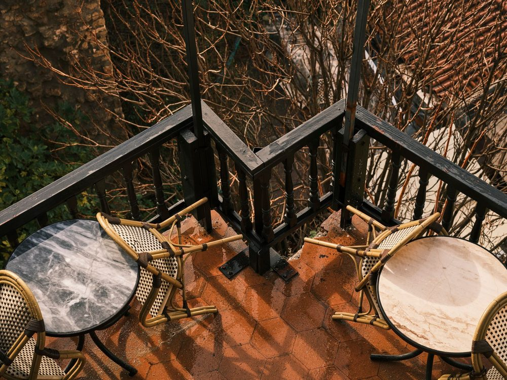
Printable
Common Mistakes
In this apartment
After completing her makeover, Riya reviews common mistakes to avoid in future projects.
Awareness of common pitfalls can lead to better planning.
One common mistake is overfilling the deck box, which invites clutter and defeats the purpose of organization. Ensure that you set an inventory limit for the deck box to keep it functional and tidy.
Another mistake is skipping anchors for tall items, which can lead to safety hazards. Always secure tall furniture and decor to prevent tipping, especially in areas where children play.
Finally, remember to conduct a weekly reset to maintain the organization and safety of your terrace. This simple habit can prevent clutter from accumulating and keep your space looking its best.
30 Day Spaces
Your next room starts here
A family terrace is an exposed building surface. Keep the same series language, and treat drainage, load, and permissions as first-class — not afterthoughts.